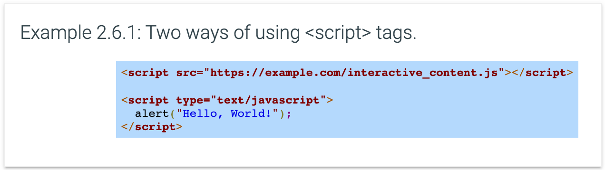
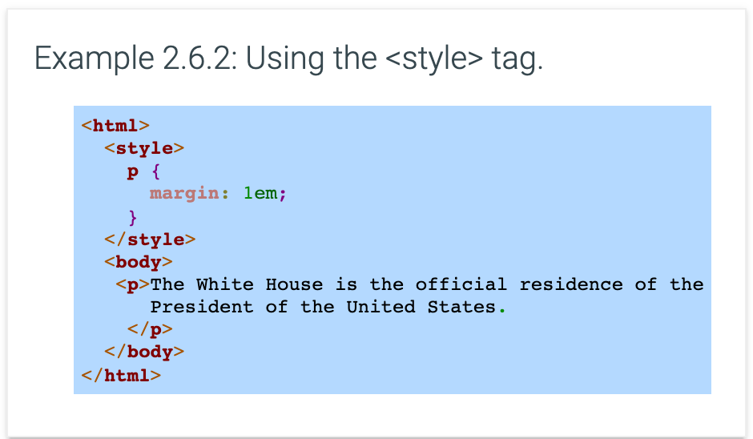
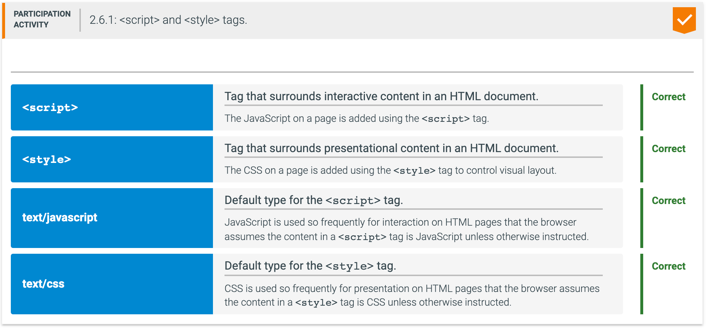

The <script> tag allows a web page to include executable code, which the browser assumes to be JavaScript unless indicated otherwise. The optional type attribute is used to indicate the content type when the content is not JavaScript. The src attribute provides the URL of an external file containing JavaScript code. If a <script> tag does not have the src attribute, then the JavaScript code is contained directly within the tag. The HTML below shows two ways the <script> tag can be used.

With either script, a pop up box will be displayed immediately when the page loads.
A common error is to forget the closing </script> tag when using the src attribute. Even when the JavaScript code is located in a separate external file, the closing </script> tag must be included.
Good practice is to use the src attribute to separate content and functionality and promote modularity. An external JavaScript file can be edited separately from an HTML file, which allows a web page's interactive content to be updated even if the content is unchanged. A separate JavaScript file can also be reused on many web pages to provide the same functionality for different pieces of content. Additionally, when the JavaScript file is separate, a browser that doesn't understand JavaScript, such as a screenreader for blind users, can avoid downloading the JavaScript file that will not be used.
The <style> tag allows the web page to introduce presentational directives, usually CSS. A <style> tag is placed in an HTML document prior to the <body> tag, because the style section is designed to describe the presentation of the entire document. Although only needed for non-CSS content and rarely used, the <style> tag has an optional type attribute that describes the content inside the tag.

Unlike all other HTML tags, the contents within the <script> and <style> tags are not displayed by the browser. The <script> and <style> tags' purpose is to provide interactive functionality and presentational styling.
